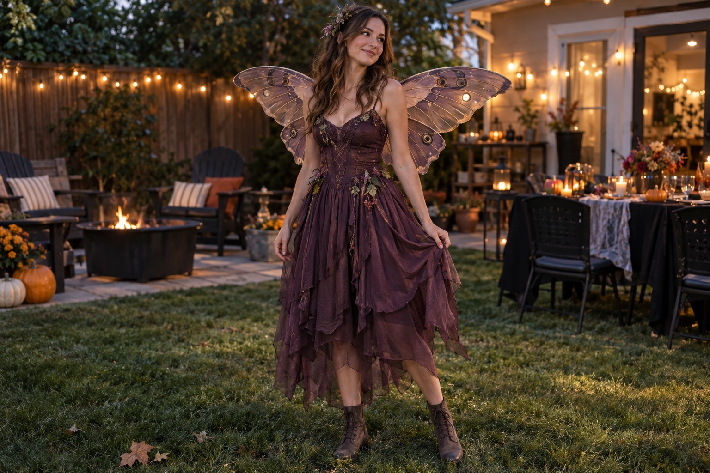

AFTER DARK / The details
Twilight garden fairy
Choose the wings first and pull one of their colors into the outfit. A small botanical hair accessory is all the extra detail this look needs.
Build this look
Portfolio shopping guide: Etsy links are non-affiliate examples. No partnerships or commissions. AI-generated imagery illustrates styling, not the linked products.
Your three-piece outfit
- Choose a plum, moss or black base outfit.
- Add lightweight moth-inspired wings.
- Finish with one botanical hair detail.
Make it your own
The wings are where to focus your search. Compare adult sizing, straps, and the total wingspan; a beautiful pair still has to fit through the party. Marketplace results can include patterns and craft supplies, so check that you are choosing the finished piece if you want something ready to wear. Then let your own wardrobe fill in the story.
The styling shortcut: smaller wings can still make an entrance—and are easier to take into a crowded room.